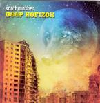

| Artist: | Scott Mosher |
| Title: | Deep Horizon |
| Label: | The Ambient Mind |
| Length(s): | 60 minutes |
| Year(s) of release: | 2006 |
| Month of review: | [12/2006] |
| 1) | Deep Horizon | 8.44 |
| 2) | The Breaking Point | 4.43 |
| 3) | A Path Of Pride | 6.00 |
| 4) | Light Years | 4.54 |
| 5) | In Visible Darkness | 5.29 |
| 6) | Turning Away | 3.49 |
| 7) | Re-engineering The Mind | 8.54 |
| 8) | Falling Down | 4.58 |
| 9) | Zero Hour | 3.32 |
| 10) | The Space Between Lives | 9.11 |
The Breaking Point is more accessible, being strongly AORish in character, yet opening with plenty of keyboards. This song is a bit too straightforward for my tastes, and the drums sound very programmed. The dramatics of the vocalist seem a bit overdone, holding on to notes at the end of his lines. I like Mosher better on the the more epic tunes, such A Path Of Pride that kicks off in bombastic fashion. A long intro flows right into a Saviour Machine style vocal section, accompanied by strong driving rhythm guitars. It is too bad the drummer isn't a flesh one, it could have enhanced the power even a bit more. The vocals also have an Iron Maiden influence, but stay in the lower regions a bit more (fortunately).
The sci-fi concepts of Light Years, and the pace reminds a bit of Rush's Red Sector A (although, and there is no shame in that, they stay well below its level). From Rush the step is small to Saga. Indeed Mosher has the crunchy guitars, and I guess the vocalists aren't that dissimilar either. In Visible Darkness is a rather slow tune, certainly from the singers viewpoint. This implies that Saviour Machine is not far off. Indeed, his voice is very low key here. The guitar solo has a bit of a Floyd/psyche feel.
The steady drum programmer, and the monotonous rhythm guitars make the Turning Away a rather steady affair. The song is carried mainly by the vocal line, which is okay, but due to the similarities in vocal technique not that different from the foregoing. Re-engineering The Mind is one of the lengthier tracks immediately noticeable from the much longer intro. The melody is good here, quite memorable. Then he breaks into a keyboard piece that has a bit of an eighties feel (say Ultravox). He then segues back into the guitar part, with again some strongly epic, good melodic material. This song is also a resting point for the singer, and I think it is a good idea to take a break, because the singer does put his stamp on the music, and there is the danger of oversimilarity. Mosher is now forced to put his melodies where his guitar is, and that certainly helps the song along.
Falling Down opens with fast keyboard runs. The vocal part is very dark, Oliva is at times very hard to understand (which is only fitting in this case). The vocals have quite a bit of muscle, bringing Symphony X to mind. The song has the tendency to alternate between the slow, darker passage and the high-pace progmetal elements. The bombast can also be likened to Ayreon's heavier stuff.
On Zero Hour, the mood is certainly not pleasant. There is plenty of foreboding and the lyrics are none too happy either. Still, Iron Maiden is closest by, mainly due to the operatic singing. The Space Between Lives is the long closer, almost ten minutes long. I expect and get a lengthy intro. For the rest, we are in familiar territory.